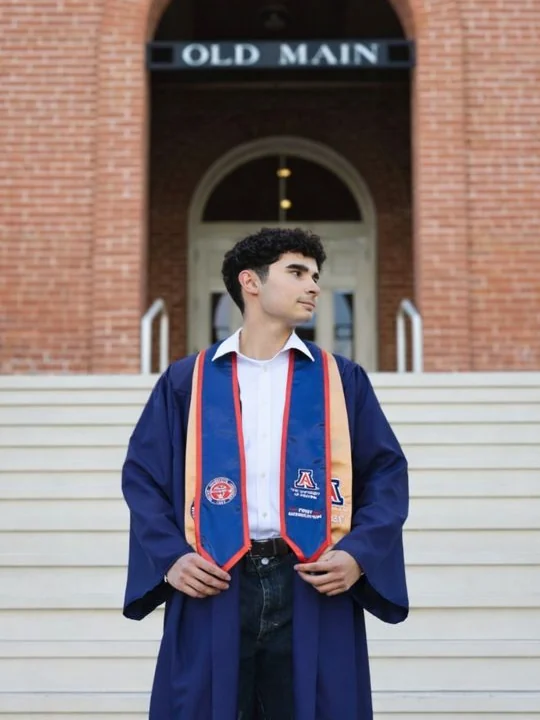

Curiosity is where I start.
I am a first-generation MS in Marketing candidate at the University of Arizona and a Digital Marketing Consultant at SignifyMD. I am building toward teams that make advanced technology and concepts understandable, usable, and valuable.
I am working towards digital and/or partner marketing roles where strategy, communication, and emerging technology come together to create real impact.

What Led Me to Marketing
2019 / 2026-
The first job
At Nordstrom's I learned how much I enjoyed working in a team toward a shared outcome. It showed me that I wanted a career built around collaborative work.
ExecutionClient workSystems -
Dogs, and a payroll
Building a dog-training venture while financing my education made me comfortable explaining a process, earning trust, and taking responsibility for the outcome.
ExecutionClient workSystems -
The gym floor
Working directly with clients taught me to listen, tailor communication, and help people make progress toward goals that mattered to them. It was the moment I realized that the exchange and implementation of information is what I enjoy most about business.
ExecutionClient workSystems -
Where I am now
At SignifyMD, I took that interest to the next step, bringing research, coordination, and communication together for a specialized audience. It confirmed that I want to keep building a career where strategy, technology, and meaningful impact meet.
ExecutionClient workSystems
The Details
Education
- MS Marketing
University of Arizona, Eller. Expected Dec 2026
- BS Business Administration
University of Arizona, May 2025
- AA Economics, AA Liberal Arts
Santa Barbara City College, May 2023
- High School Diploma
Bellarmine College Preparatory, May 2021
Honors and Certifications
- Phi Theta Kappa Honor Society Member
Beta Gamma Upsilon Chapter, Santa Barbara City College, Apr 2023
- Phi Theta Kappa Scholarship Recipient
Phi Theta Kappa, University of Arizona Eller College of Management
- Social and Behavioral Research Investigators
CITI Program, issued Jan 2026, expires Jan 2030, Credential ID 74924643
Selected Work
Pharmacovigilance RAG Pipeline
Agentic RAG system for drug safety monitoring.
Native × Japan Market Entry
International marketing strategy project.
AI Trust in Digital Search
Quantitative research design and hypothesis testing.
Campaign Efficiency Case Study
Data modeling, SQL analysis, visualization.
Building My Website
Design and development iterations.
Photography
Personal portfolio series.